install.packages("tidyverse")Data Workflow and Visualization with the tidyverse
PSYC 6019-A01 / PSYC 6022-A01 2025-09-04 | Lab 2
Jess Helmer
Outline
-
tidyverseintroduction -
ggplot2introduction - Building plots
- Aesthetic mappings
- Geoms
- Layering
The tidyverse
What is the tidyverse???
A collection R packages made for data science, all working together in the same “tidy” framework.
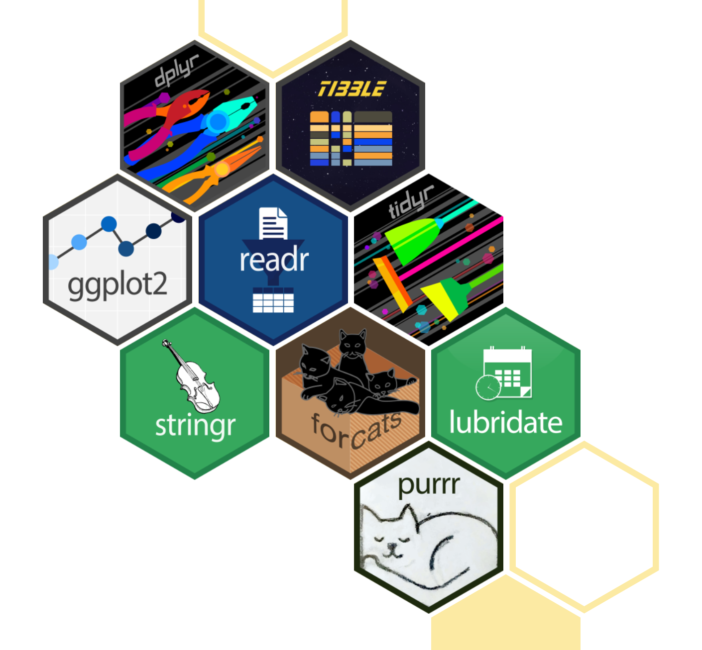
The tidyverse
Let’s get ready to use some tidyverse code!
We must first install the tidyverse with the install.packages("packagename") function.
This will install all packages within the tidyverse, so we don’t have to install each manually.
You only have to install packages once per R download (and then whenever you want to update a package).
To load the tidyverse packages into the R environment, we use the library(package) function. You will have to run this line once per R session (i.e., every time you restart R).
── Attaching core tidyverse packages ──────────────────────── tidyverse 2.0.0 ──
✔ dplyr 1.2.1 ✔ readr 2.2.0
✔ forcats 1.0.1 ✔ stringr 1.6.0
✔ ggplot2 4.0.3 ✔ tibble 3.3.1
✔ lubridate 1.9.5 ✔ tidyr 1.3.2
✔ purrr 1.2.2
── Conflicts ────────────────────────────────────────── tidyverse_conflicts() ──
✖ dplyr::filter() masks stats::filter()
✖ dplyr::lag() masks stats::lag()
ℹ Use the conflicted package (<http://conflicted.r-lib.org/>) to force all conflicts to become errorsNote
Note the Conflicts section! Remember when we talked about overwriting?
Whole Game
Pieces of the “whole game” of data science

Whole Game
Pieces of the “whole game” of data science, with corresponding tidyverse packages
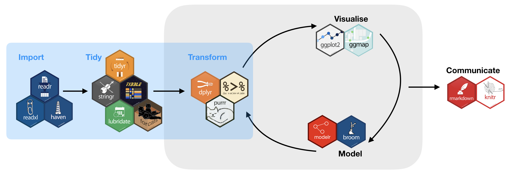

Import: Today’s Dataset
Dataset on player stats from the 2026 World Cup
# A tibble: 6 × 14
team_name fifa_code player_name position matches_played matches_started
<chr> <chr> <chr> <chr> <int> <int>
1 Mexico MEX José Raúl Rangel GK 5 5
2 Mexico MEX Jorge Eduardo San… DEF 5 5
3 Mexico MEX César Jasib Montes DEF 3 2
4 Mexico MEX Edson Omar Alvarez DEF 2 0
5 Mexico MEX Johan Felipe Vasq… DEF 2 2
6 Mexico MEX Erik Antonio Lira MID 5 5
# ℹ 8 more variables: minutes_played <int>, goals <int>, assists <int>,
# yellow_cards <int>, red_cards <int>, own_goals <int>, saves <int>,
# goals_conceded <int>Download data onto your computer
Move it to where you want it
Read it into R
Assign it to a variable
Islam M (2026). “The FIFA World Cup 2026 Master Dataset: A Normalized 3NF Relational Benchmark of the Expanded 48-Team International Football Tournament.” doi:10.5281/zenodo.21592427 https://doi.org/10.5281/zenodo.21592427.
Import: Download Data and Move It
You can access the data through our class GitHub source page
Also accessible by clicking the GitHub icon on the class website
Navigate to lab/data/world_cup_player_stats.csv, and download.
Then, move the .csv file to the folder you want it in.
I recommend either having a data/ subfolder or a subfolder for each lab (e.g., lab_01/, lab_02/, …).
Import: Read Data into R
This file is a CSV file, so we can use the read.csv(file) function
file = a path to the data file.
Import: Paths to Files
How do we specify paths to data files?
Sometimes, you’ll see something like this
Bad! This will never work on someone else’s computer. Or your own computer three months from now, if you decide to change your folder structure.
Import: Paths to Files
How do we specify paths to data files?
Better: use a tool to automatically find your project root folder, and specify paths with that
Like the here::here() function
Import: Read Data into R
This file is a CSV file, so we can use the read.csv(file) function, where file is a path to the data file.
here::here()[1] "C:/Users/jessi/OneDrive - Georgia Institute of Technology/Courses/GTA/PSYC 6019/PSYC6019-2026"here::here("lab", "data", "world_cup_player_stats.csv")[1] "C:/Users/jessi/OneDrive - Georgia Institute of Technology/Courses/GTA/PSYC 6019/PSYC6019-2026/lab/data/world_cup_player_stats.csv" team_name fifa_code player_name position matches_played
1 Mexico MEX José Raúl Rangel GK 5
2 Mexico MEX Jorge Eduardo Sanchez DEF 5
3 Mexico MEX César Jasib Montes DEF 3
4 Mexico MEX Edson Omar Alvarez DEF 2
5 Mexico MEX Johan Felipe Vasquez DEF 2
6 Mexico MEX Erik Antonio Lira MID 5
matches_started minutes_played goals assists yellow_cards red_cards own_goals
1 5 438 0 0 0 0 0
2 5 439 0 1 0 0 0
3 2 165 0 0 0 1 0
4 0 75 0 0 1 0 0
5 2 180 0 0 0 0 0
6 5 450 0 1 1 0 0
saves goals_conceded
1 7 3
2 NA NA
3 NA NA
4 NA NA
5 NA NA
6 NA NAGood, we can successfully read in the data. Now, to keep using it, let’s assign it to a variable.
Import: Read Data into R
This file is a CSV file, so we can use the read.csv(file) function, where file is a path to the data file.
head(player_stats) team_name fifa_code player_name position matches_played
1 Mexico MEX José Raúl Rangel GK 5
2 Mexico MEX Jorge Eduardo Sanchez DEF 5
3 Mexico MEX César Jasib Montes DEF 3
4 Mexico MEX Edson Omar Alvarez DEF 2
5 Mexico MEX Johan Felipe Vasquez DEF 2
6 Mexico MEX Erik Antonio Lira MID 5
matches_started minutes_played goals assists yellow_cards red_cards own_goals
1 5 438 0 0 0 0 0
2 5 439 0 1 0 0 0
3 2 165 0 0 0 1 0
4 0 75 0 0 1 0 0
5 2 180 0 0 0 0 0
6 5 450 0 1 1 0 0
saves goals_conceded
1 7 3
2 NA NA
3 NA NA
4 NA NA
5 NA NA
6 NA NAImport: World Cup 2026
Let’s get a look at this data…
Provides descriptive statistics for all columns
summary(player_stats) team_name fifa_code player_name position
Length:1248 Length:1248 Length:1248 Length:1248
Class :character Class :character Class :character Class :character
Mode :character Mode :character Mode :character Mode :character
matches_played matches_started minutes_played goals
Min. :0.000 Min. :0.000 Min. : 0 Min. : 0.0000
1st Qu.:1.000 1st Qu.:0.000 1st Qu.: 23 1st Qu.: 0.0000
Median :3.000 Median :2.000 Median :146 Median : 0.0000
Mean :2.564 Mean :1.833 Mean :169 Mean : 0.2356
3rd Qu.:4.000 3rd Qu.:3.000 3rd Qu.:270 3rd Qu.: 0.0000
Max. :8.000 Max. :8.000 Max. :750 Max. :10.0000
assists yellow_cards red_cards own_goals
Min. :0.0000 Min. :0.00000 Min. :0.000000 Min. :0.00000
1st Qu.:0.0000 1st Qu.:0.00000 1st Qu.:0.000000 1st Qu.:0.00000
Median :0.0000 Median :0.00000 Median :0.000000 Median :0.00000
Mean :0.1635 Mean :0.02804 Mean :0.009615 Mean :0.01122
3rd Qu.:0.0000 3rd Qu.:0.00000 3rd Qu.:0.000000 3rd Qu.:0.00000
Max. :8.0000 Max. :1.00000 Max. :1.000000 Max. :2.00000
saves goals_conceded
Min. : 0.000 Min. : 0.000
1st Qu.: 0.000 1st Qu.: 0.000
Median : 0.000 Median : 0.000
Mean : 4.772 Mean : 2.166
3rd Qu.: 8.000 3rd Qu.: 4.000
Max. :29.000 Max. :10.000
NA's :1103 NA's :1103 Shows the ‘structure’ of the data
str(player_stats)'data.frame': 1248 obs. of 14 variables:
$ team_name : chr "Mexico" "Mexico" "Mexico" "Mexico" ...
$ fifa_code : chr "MEX" "MEX" "MEX" "MEX" ...
$ player_name : chr "José Raúl Rangel" "Jorge Eduardo Sanchez" "César Jasib Montes" "Edson Omar Alvarez" ...
$ position : chr "GK" "DEF" "DEF" "DEF" ...
$ matches_played : int 5 5 3 2 2 5 4 2 3 0 ...
$ matches_started: int 5 5 2 0 2 5 2 0 2 0 ...
$ minutes_played : int 438 439 165 75 180 450 194 41 193 0 ...
$ goals : int 0 0 0 0 0 0 1 1 3 0 ...
$ assists : int 0 1 0 0 0 1 1 0 0 0 ...
$ yellow_cards : int 0 0 0 1 0 1 0 0 0 0 ...
$ red_cards : int 0 0 1 0 0 0 0 0 0 0 ...
$ own_goals : int 0 0 0 0 0 0 0 0 0 0 ...
$ saves : int 7 NA NA NA NA NA NA NA NA NA ...
$ goals_conceded : int 3 NA NA NA NA NA NA NA NA NA ...Shows some information about our data, including variable types
# our first `tidyverse` function
glimpse(player_stats)Rows: 1,248
Columns: 14
$ team_name <chr> "Mexico", "Mexico", "Mexico", "Mexico", "Mexico", "Mex…
$ fifa_code <chr> "MEX", "MEX", "MEX", "MEX", "MEX", "MEX", "MEX", "MEX"…
$ player_name <chr> "José Raúl Rangel", "Jorge Eduardo Sanchez", "César Ja…
$ position <chr> "GK", "DEF", "DEF", "DEF", "DEF", "MID", "MID", "MID",…
$ matches_played <int> 5, 5, 3, 2, 2, 5, 4, 2, 3, 0, 5, 0, 1, 0, 4, 4, 4, 1, …
$ matches_started <int> 5, 5, 2, 0, 2, 5, 2, 0, 2, 0, 3, 0, 0, 0, 3, 2, 3, 0, …
$ minutes_played <int> 438, 439, 165, 75, 180, 450, 194, 41, 193, 0, 316, 0, …
$ goals <int> 0, 0, 0, 0, 0, 0, 1, 1, 3, 0, 0, 0, 0, 0, 0, 4, 0, 0, …
$ assists <int> 0, 1, 0, 0, 0, 1, 1, 0, 0, 0, 0, 0, 0, 0, 0, 1, 0, 0, …
$ yellow_cards <int> 0, 0, 0, 1, 0, 1, 0, 0, 0, 0, 0, 0, 0, 0, 0, 0, 0, 0, …
$ red_cards <int> 0, 0, 1, 0, 0, 0, 0, 0, 0, 0, 0, 0, 0, 0, 0, 0, 0, 0, …
$ own_goals <int> 0, 0, 0, 0, 0, 0, 0, 0, 0, 0, 0, 0, 0, 0, 0, 0, 0, 0, …
$ saves <int> 7, NA, NA, NA, NA, NA, NA, NA, NA, NA, NA, 0, 0, NA, N…
$ goals_conceded <int> 3, NA, NA, NA, NA, NA, NA, NA, NA, NA, NA, 0, 0, NA, N…Whole Game
Import → Tidy → Transform → Visualize → Model → Communicate
Tidy
Refers to tidy data
“Happy families are all alike; every unhappy family is unhappy in its own way.”
— Leo Tolstoy
“Tidy datasets are all alike, but every messy dataset is messy in its own way.”
— Hadley Wickham
Tidy data follow a consistent set of organizational principles
Typically a bit more work up front but much easier to work with after
Tidy
player_name minutes_played assists goals
1 José Raúl Rangel 438 0 0
2 Jorge Eduardo Sanchez 439 1 0
3 César Jasib Montes 165 0 0
4 Edson Omar Alvarez 75 0 0
5 Johan Felipe Vasquez 180 0 0
6 Erik Antonio Lira 450 1 0# A tibble: 6 × 4
player_name minutes_played type count
<chr> <int> <chr> <int>
1 José Raúl Rangel 438 assists 0
2 José Raúl Rangel 438 goals 0
3 Jorge Eduardo Sanchez 439 assists 1
4 Jorge Eduardo Sanchez 439 goals 0
5 César Jasib Montes 165 assists 0
6 César Jasib Montes 165 goals 0 player_name minutes_played assists_to_goals
1 José Raúl Rangel 438 0:0
2 Jorge Eduardo Sanchez 439 1:0
3 César Jasib Montes 165 0:0
4 Edson Omar Alvarez 75 0:0
5 Johan Felipe Vasquez 180 0:0
6 Erik Antonio Lira 450 1:0All of these dataframes contain the same information, but one of them is much easier to work with…
Why?
Tidy: Principles
Three rules to a tidy dataset
Each variable is a column; each column is a variable.
Each observation is a row; each row is an observation.
Each value is a cell; each cell is a single value.

Tidy: Why Tidy?
- Consistency! Any sort of consistency in your data management will be beneficial.
- R loves vectors! Having variables in columns plays well with many functions.
- Cohesion with an ecosystem of R packages that expect tidy data.
Tidy: Is Our Data Tidy?
head(player_stats, n = 10) team_name fifa_code player_name position matches_played
1 Mexico MEX José Raúl Rangel GK 5
2 Mexico MEX Jorge Eduardo Sanchez DEF 5
3 Mexico MEX César Jasib Montes DEF 3
4 Mexico MEX Edson Omar Alvarez DEF 2
5 Mexico MEX Johan Felipe Vasquez DEF 2
6 Mexico MEX Erik Antonio Lira MID 5
7 Mexico MEX Luis Francisco Romo MID 4
8 Mexico MEX Álvaro Fidalgo MID 2
9 Mexico MEX Raúl Alonso Jimenez FWD 3
10 Mexico MEX Ernesto Alexis Vega FWD 0
matches_started minutes_played goals assists yellow_cards red_cards
1 5 438 0 0 0 0
2 5 439 0 1 0 0
3 2 165 0 0 0 1
4 0 75 0 0 1 0
5 2 180 0 0 0 0
6 5 450 0 1 1 0
7 2 194 1 1 0 0
8 0 41 1 0 0 0
9 2 193 3 0 0 0
10 0 0 0 0 0 0
own_goals saves goals_conceded
1 0 7 3
2 0 NA NA
3 0 NA NA
4 0 NA NA
5 0 NA NA
6 0 NA NA
7 0 NA NA
8 0 NA NA
9 0 NA NA
10 0 NA NAEach variable is a column; each column is a variable.
Each observation is a row; each row is an observation.
Each value is a cell; each cell is a single value.
Tidy: For Later…
We will learn ways to make untidy data tidy in later classes
For now, we are good, and can proceed with our work!
Whole Game
Import → Tidy → Transform → Visualize → Model → Communicate
Transform
Usually, our data doesn’t come to us with the variables exactly as we want them
Sometimes we need…
New variables, based on our existing data or otherwise
Summarized version of our dataset
Reordered variables
Etc., etc., etc. Any others?
Transform: tidyverse syntax
The tidyverse website mentioned that each package shares a common language for their functions
Based off of dplyr (one of the packages) verbs
The first argument is always a dataframe.
The subsequent arguments typically describe which columns to operate on using the variable names (without quotes).
The output is always a new data frame.
Transform: More tidyverse syntax
One more thing…
tidyverse verbs work best in a pipe: |>
How we’ve been using functions:
output <- function(input)
Functions in a pipe:
output <- input |> function()
Why is this helpful?
Many functions together:
another_function(other_function(function(input)))Functions in a pipe:
input |>
function() |>
other_function() |>
another_function()Transform: Goals For Our Data
My questions:
What team had the most goals overall?
What goalie had the highest saves per match played?
Class question!! (time pending)
Transform: Functions
A core few of the tidyverse functions…
select(df, columns)
Selects just the columns you specify. Helpful for paring down the data for easy viewing.
mutate(df, new_column = ...)
Adds new columns to the dataframe, either from scratch or based on existing columns.
player_minutes_played |>
mutate(hours_played = minutes_played / 60,
hours_played_rounded = round(hours_played, 2)) |>
head() player_name minutes_played hours_played hours_played_rounded
1 José Raúl Rangel 438 7.300000 7.30
2 Jorge Eduardo Sanchez 439 7.316667 7.32
3 César Jasib Montes 165 2.750000 2.75
4 Edson Omar Alvarez 75 1.250000 1.25
5 Johan Felipe Vasquez 180 3.000000 3.00
6 Erik Antonio Lira 450 7.500000 7.50filter(df, condition_to_keep)
filter_out(df, condition_to_toss) does the opposite (as you’d expect by the name)
player_minutes_played |>
nrow()[1] 1248player_minutes_played |>
filter_out(minutes_played == 0) |>
nrow()[1] 1039| Symbol | Meaning |
|---|---|
== |
equal to |
!= |
not equal to |
< |
less than |
<= |
less than or equal to |
> |
greater than |
>= |
greater than or equal to |
summarize(df, .by = optional_grouping_variable, new_column = ...)
arrange()
arrange(ordering_var)
Orders data based on some variable. Can use desc() (descending) to flip.
team_name player_name minutes_played
1 Iraq Aamar Iqbal Zidane 188
2 Scotland Aaron Buchanan Hickey 75
3 Uzbekistan Abbosbek Fayzullaev 223
4 Egypt Abdelaziz Mohame Mostafa 390
5 Egypt Abdelaziz Moustafa Ramy Rabia 368
6 Egypt Abdelghaffar Abdel Tarek Alaa 0player_stats |>
select(team_name, player_name, minutes_played) |>
arrange(desc(minutes_played)) |>
head() team_name player_name minutes_played
1 Spain Marc Cucurella 750
2 Argentina Alexis Mac Allister 720
3 France Kylian Mbappe 711
4 France Michael Akpovie Olise 668
5 Argentina Enzo Jeremías Fernandez 663
6 France Dayotchanculle Oswald Upamecano 661Transform: Questions
- What team had the most goals overall?
total_goals_df <- player_stats |>
summarize(.by = team_name,
total_goals = sum(goals))
total_goals_df |>
arrange(desc(total_goals)) |>
head(10) team_name total_goals
1 France 20
2 England 20
3 Argentina 18
4 Belgium 13
5 Spain 13
6 Norway 12
7 Germany 11
8 Mexico 10
9 Switzerland 10
10 Brazil 10 team_name total_goals
1 France 20
2 England 20Transform: Questions
- What goalie had the highest saves per match played?
player_stats$position |> unique()[1] "GK" "DEF" "MID" "FWD"player_stats |>
filter(when_all(position == "GK",
matches_played > 0)) |>
select(team_name, player_name, saves, matches_played) |>
mutate(saves_per_match = saves / matches_played) |>
arrange(desc(saves_per_match)) |>
head() team_name player_name saves matches_played
1 Curaçao Eloy Victor Room 25 3
2 Sweden Jacob Mikael Widell Zetterstrom 13 2
3 Ecuador Hernán Ismael Galindez 25 4
4 Tunisia Abdelmouhib Chamakh 6 1
5 New Zealand Maxime Teremoana Crocombe 18 3
6 Saudi Arabia Khalil Mohammed Alowais 18 3
saves_per_match
1 8.333333
2 6.500000
3 6.250000
4 6.000000
5 6.000000
6 6.000000Transform: Questions
- Class question!! (time pending)
Whole Game
Import → Tidy → Transform → Visualize → Model → Communicate
Visualize
So many numbers! Can we please visualize our data?
“The simple graph has brought more information to the data analyst’s mind than any other device.” — John Tukey
Yes! With the ggplot2 package. ggplot2 provides a very expansive and flexible plotting system. It is also at the core of a whole ecosystem of ggplot2 extension packages, meaning so many plotting options are available.
Visualizations
In statistics, we are often calculating summary statistics: means, medians, SDs, etc.
These are great, but don’t trust them alone!
What do you think a dataset with these descriptives would look like?
x_mean <- 54.26
y_mean <- 47.83
x_sd <- 16.76
y_sd <- 26.93
cor <- -0.06Visualizations!
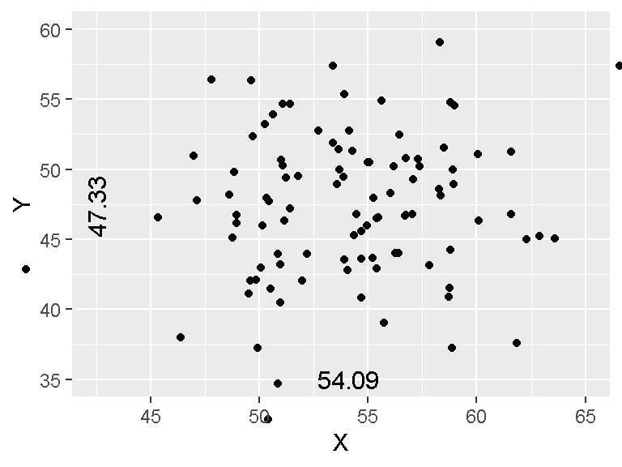
Visualizations!
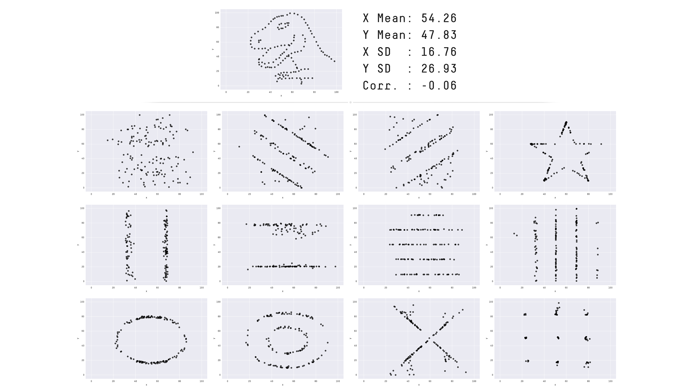
Visualize: ggplot2
Now, let’s explore a different question: what is the relationship between players’ positions and the number of goals they score?
Let’s begin at the end:
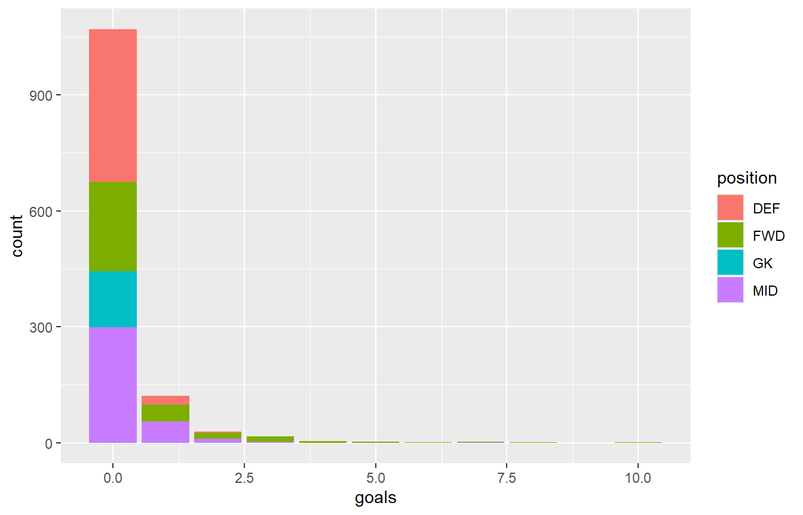
Visualize: ggplot2
Now, let’s explore a different question: what is the relationship between players’ positions and the number of goals they score?
When we just call the ggplot() function with our data as the first argument, we get this blank area
ggplot() works by adding layers and layers onto a plot object
This is not a very exciting plot, but you can think of it like an empty canvas you’ll paint the remaining layers of your plot onto. — R4DS
Visualize: ggplot2
Now, let’s explore a different question: what is the relationship between players’ positions and the number of goals they score?
Visualize: ggplot2
Now, let’s explore a different question: what is the relationship between players’ positions and the number of goals they score?
Still no data, though!
Need to define some geom, a geometric display of our data
Will usually start with geom_
geom_line() |
line graph |
geom_bar() |
bar graph |
geom_boxplot() |
boxplot |
geom_point() |
scatterplot |
Visualize: ggplot2
Now, let’s explore a different question: what is the relationship between players’ positions and the number of goals they score?
Still need to separate by position
Can use facet_wrap(~ grouping_variable) to make different panels
Can add position to the fill mapping aesthetic, while we’re at it, to add a bit of color.
Visualize: ggplot2
Now, let’s explore a different question: what is the relationship between players’ positions and the number of goals they score?
The absolute number of goals might be a little harder to interpret, though.
We can add a mapping argument to geom_bar() to tell it to plot proportions instead of counts.
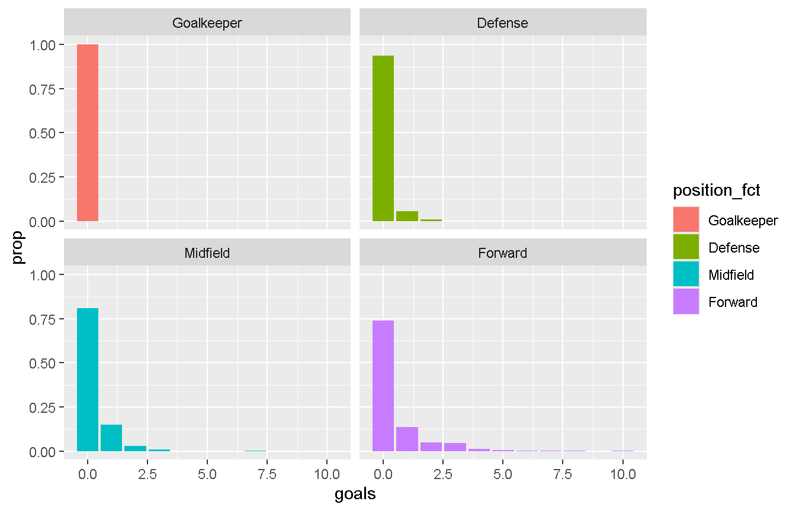
ggplot(data = player_stats,
mapping = aes(x = goals, fill = position)) +
geom_bar(mapping = aes(y = after_stat(prop))) +
facet_wrap(~ position)Visualize: ggplot2
Now, let’s explore a different question: what is the relationship between players’ positions and the number of goals they score?
Now, we can start tidying this up. Let’s make the y-axis have percentage signs with label_percent() from the scales package, let’s make the x-axis only have integers (since goals scored is a count variable) by specifying its breaks argument.
With each of these scales_ functions, we can pass in an scale label as the first argument.
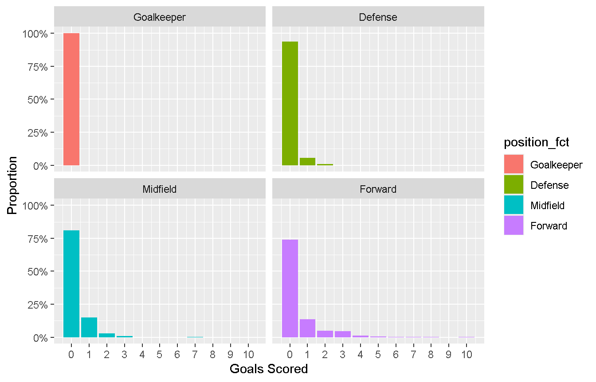
ggplot(data = player_stats,
mapping = aes(x = goals, fill = position)) +
geom_bar(mapping = aes(y = after_stat(prop))) +
facet_wrap(~ position) +
scale_y_continuous("Proportion", limits = 0:1, labels = scales::label_percent()) +
scale_x_continuous("Goals Scored", breaks = 0:10)Visualize: ggplot2
Now, let’s explore a different question: what is the relationship between players’ positions and the number of goals they score?
Let’s add some nicer-looking labels to the facets.
We need to create a vector of the pattern c(value_in_the_data = label_we_want, ...).
Then, we can tell facet_wrap() how to interpret it with the as_labeller() function.
ggplot(data = player_stats,
mapping = aes(x = goals, fill = position)) +
geom_bar(mapping = aes(y = after_stat(prop))) +
facet_wrap(~ position, labeller = as_labeller(position_labels)) +
scale_y_continuous("Proportion", limits = 0:1, labels = scales::label_percent()) +
scale_x_continuous("Goals Scored", breaks = 0:10)Visualize: ggplot2
Now, let’s explore a different question: what is the relationship between players’ positions and the number of goals they score?
To help anyone viewing our plot understand it, we can add some labels with the labs() function.
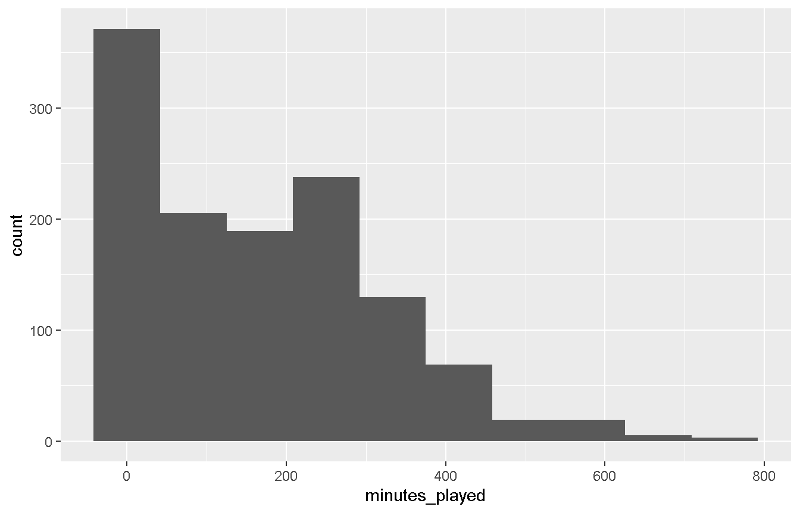
position_labels = c(
"GK" = "Goalkeeper",
"DEF" = "Defense",
"MID" = "Midfield",
"FWD" = "Forward"
)
ggplot(data = player_stats,
mapping = aes(x = goals, fill = position)) +
geom_bar(mapping = aes(y = after_stat(prop))) +
facet_wrap(~ position, labeller = as_labeller(position_labels)) +
scale_y_continuous("Proportion", limits = 0:1, labels = scales::label_percent()) +
scale_x_continuous("Goals Scored", breaks = 0:10) +
labs(title = "2026 World Cup Goals by Player Position",
caption = "Data from doi.org/10.5281/zenodo.21592427")Visualize: ggplot2
Now, let’s explore a different question: what is the relationship between players’ positions and the number of goals they score?
To improve the overall look of the plot, we can add a ggplot theme.
I like increasing the base_size argument to improve readability.
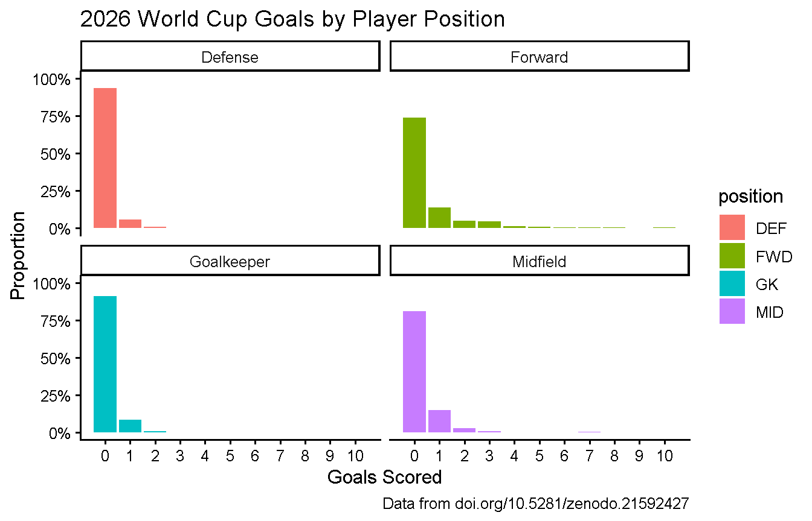
position_labels = c(
"GK" = "Goalkeeper",
"DEF" = "Defense",
"MID" = "Midfield",
"FWD" = "Forward"
)
ggplot(data = player_stats,
mapping = aes(x = goals, fill = position)) +
geom_bar(mapping = aes(y = after_stat(prop))) +
facet_wrap(~ position, labeller = as_labeller(position_labels)) +
scale_y_continuous("Proportion", limits = 0:1, labels = scales::label_percent()) +
scale_x_continuous("Goals Scored", breaks = 0:10) +
labs(title = "2026 World Cup Goals by Player Position",
caption = "Data from doi.org/10.5281/zenodo.21592427") +
theme_classic(base_size = 12)Visualize: ggplot2
Now, let’s explore a different question: what is the relationship between players’ positions and the number of goals they score?
We can use the theme() function to further customize our plot.
We can remove the redundant color legend by setting legend.position to "none".
We can center and increase the plot title by specifying that it is a text element with element_text(), and customizing its hjust (horizontal justification) and size argument.
I also like to cap the axes with the guides() and guide_axis(cap = T) function.
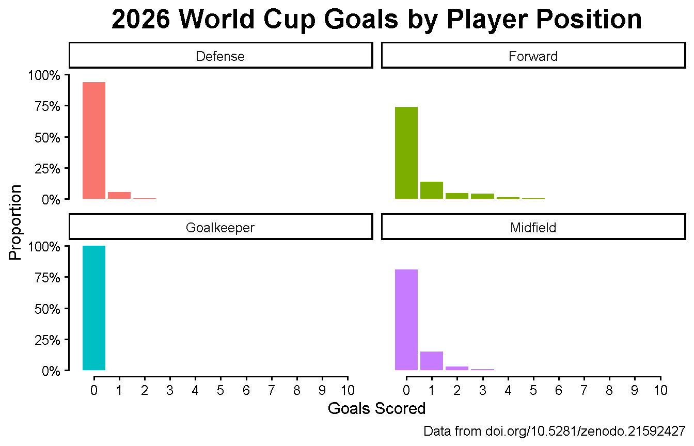
position_labels = c(
"GK" = "Goalkeeper",
"DEF" = "Defense",
"MID" = "Midfield",
"FWD" = "Forward"
)
ggplot(data = player_stats,
mapping = aes(x = goals, fill = position)) +
geom_bar(mapping = aes(y = after_stat(prop))) +
facet_wrap(~ position, labeller = as_labeller(position_labels)) +
scale_y_continuous("Proportion", limits = 0:1, labels = scales::label_percent()) +
scale_x_continuous("Goals Scored", breaks = 0:10) +
labs(title = "2026 World Cup Goals by Player Position",
caption = "Data from doi.org/10.5281/zenodo.21592427") +
guides(x = guide_axis(cap = T),
y = guide_axis(cap = T)) +
theme_classic(base_size = 12) +
theme(legend.position = "none",
plot.title = element_text(size = 20, hjust = 0.5, face = "bold"),
text = element_text(family = "Roboto"))Some More ggplots
That was a barplot created with geom_bar(), which plots discrete variables. To plot the distribution of continuous variables, we can use a histogram with geom_histogram() or a density plot with geom_density().

ggplot(data = player_stats,
mapping = aes(x = minutes_played)) +
geom_histogram(binwidth = 30)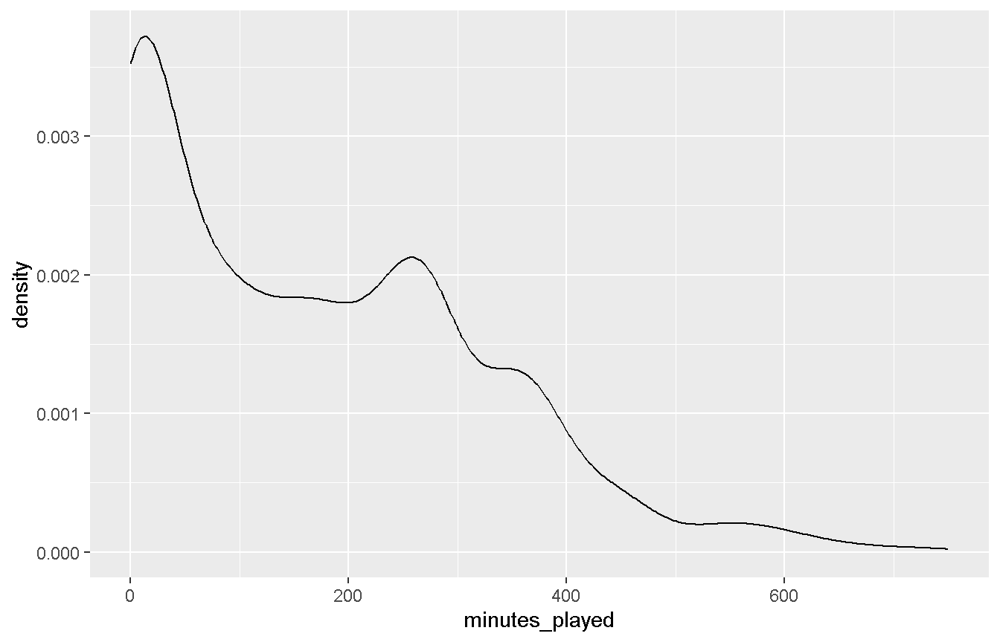
ggplot(data = player_stats,
mapping = aes(x = minutes_played)) +
geom_density()Some More ggplots
We can layer on the observed data by adding a point plot with geom_point().

ggplot(data = player_stats,
mapping = aes(x = minutes_played, y = position)) +
geom_violin()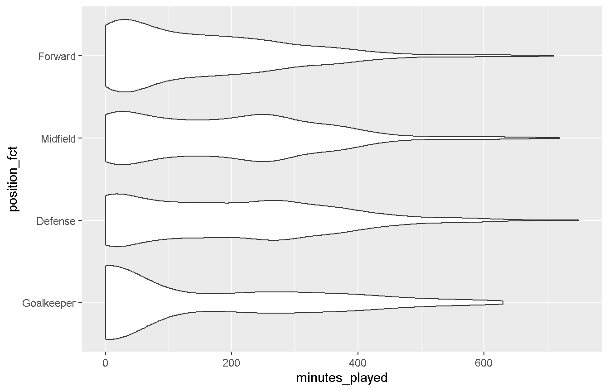
ggplot(data = player_stats,
mapping = aes(y = minutes_played, x = position)) +
geom_violin()Some More ggplots
To plot two continuous variables, we can specify both the x- and y-axes in aes() and add a point plot with geom_point(). We can also start to layer geoms, adding a trend line with geom_smooth(). Note that geom_smooth() picks up the same x and y assignment as already specified in aes().
ggplot(data = player_stats,
mapping = aes(x = minutes_played, y = goals)) +
geom_point()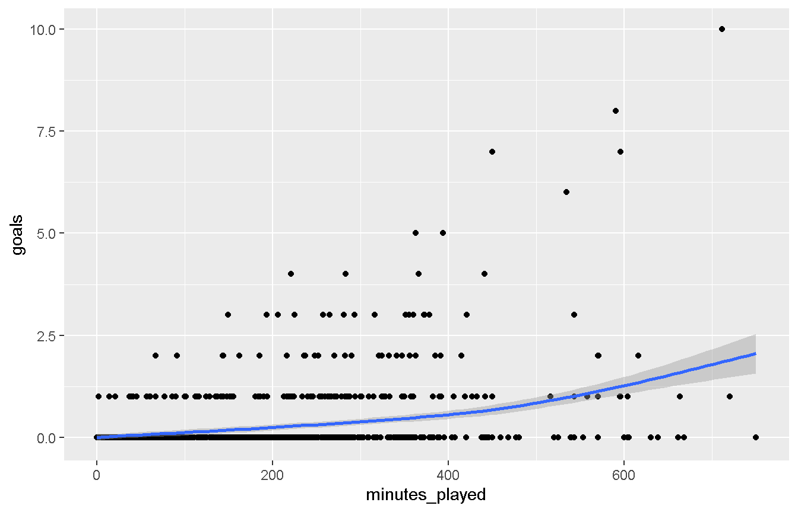
ggplot(data = player_stats,
mapping = aes(x = minutes_played, y = goals)) +
geom_point() +
geom_smooth()Some More ggplots
If we want to see the points labeled by player position, we can specify the color mapping in aes(). Also, because data is the first argument, we can pipe right into ggplot()!
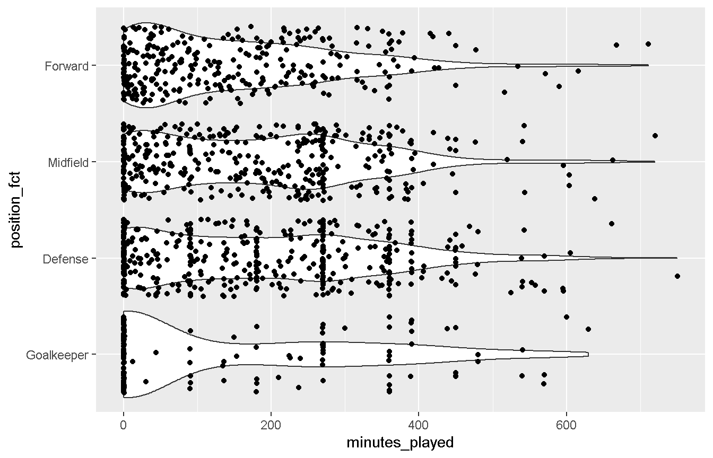
ggplot(data = player_stats,
mapping = aes(x = minutes_played, y = goals, color = position)) +
geom_point() +
geom_smooth()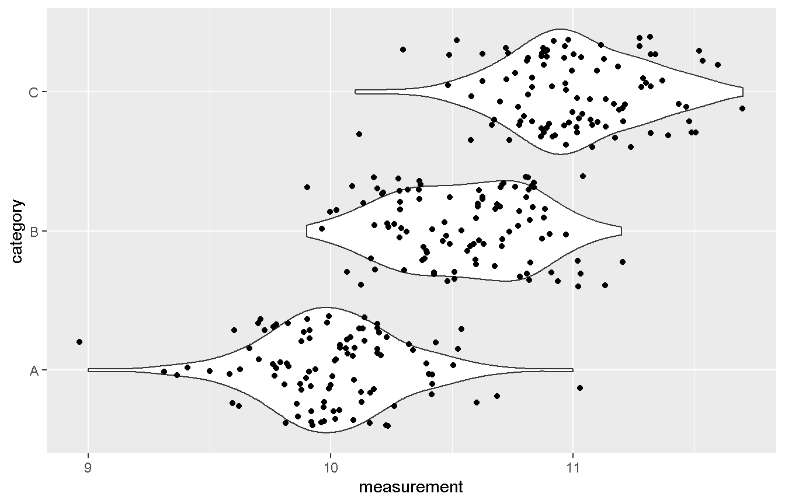
player_stats |>
filter_out(position == "GK") |>
ggplot(mapping = aes(x = minutes_played, y = goals, color = position)) +
geom_point() +
geom_smooth()Visualize: ggplot2
Another example of tidying a plot up. Note how similar all the code is!
We can use the theme() function to further customize our plot.
We can remove the redundant color legend by setting legend.position to "none".
We can center and increase the plot title by specifying that it is a text element with element_text(), and customizing its hjust (horizontal justification) and size argument.
I also like to cap the axes with the guides() and guide_axis(cap = T) function.
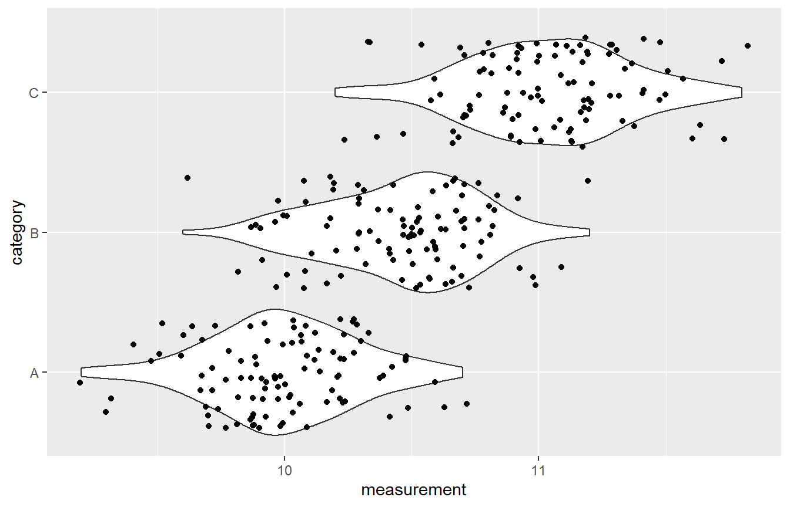
player_stats |>
filter_out(position == "GK") |>
ggplot(mapping = aes(x = minutes_played, y = goals,
color = position, fill = position)) +
geom_point() +
geom_smooth() +
guides(x = guide_axis(cap = T),
y = guide_axis(cap = T)) +
scale_y_continuous(breaks = 0:10) +
labs(title = "Player Minutes Played vs. Goals Scored",
subtitle = str_wrap("Stronger Relationship Between Minutes Played and Goals Scored for Attacking Players than Defensive Players",
caption = "Data from doi.org/10.5281/zenodo.21592427"),
x = "Minutes Played", y = "Goals",
color = "Position", fill = "Position") +
theme_classic(base_size = 12) +
theme(legend.position = "inside",
legend.position.inside = c(.1, .8),
plot.title = element_text(size = 20, hjust = 0.5, face = "bold"),
plot.subtitle = element_text(size = 12, hjust = 0.5, face = "italic"),
text = element_text(family = "Roboto"))Visualizations: Resources
Plotting in ggplot2 is very powerful and flexible but can take some getting used to. None of these functions or arguments need to be memorized. You will always have access to reference material and documentation.

Visualizations: Bonus
Back to the violin plot, we can layer on the observed data by adding a point plot with geom_point().
But, the points are all overlapping and hard to see at the different levels of position.
We can nudge them off their data value by using geom_jitter(). But, we only want it to nudge on the y-axis, not the x-axis.
So, we will need to set geom_jitter()’s width argument to 0. Otherwise, it’ll try to move the points on their minutes_played value, too.
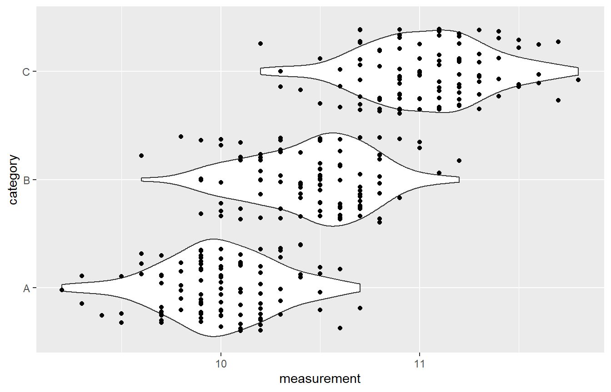
ggplot(data = player_stats,
mapping = aes(x = minutes_played, y = position)) +
geom_violin() +
geom_point()Visualizations: Bonus
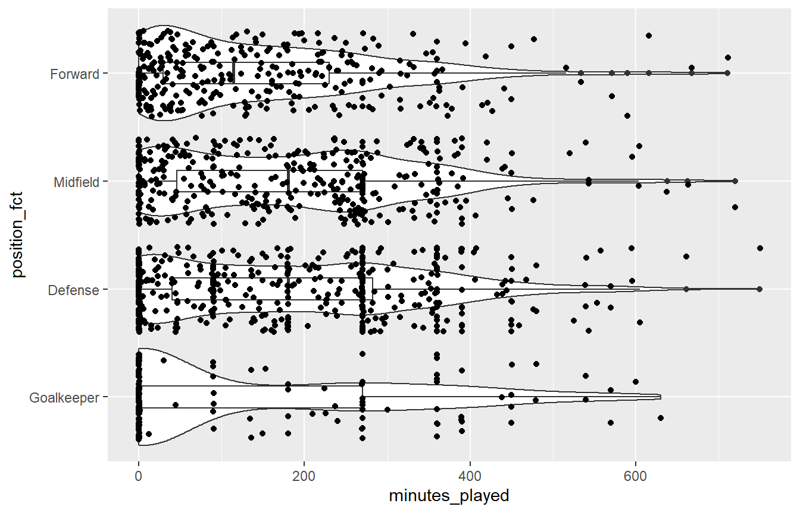
ggplot(data = player_stats,
mapping = aes(x = minutes_played, y = position)) +
geom_violin() +
geom_point()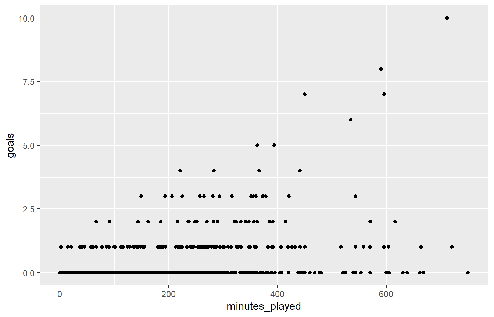
ggplot(data = player_stats,
mapping = aes(x = minutes_played, y = position)) +
geom_violin() +
geom_jitter(width = 0)